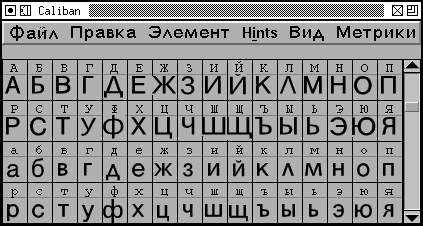
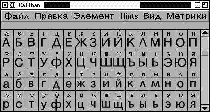

地域化
 

FontForge は異なる言語に対して異なるメッセージ文字列を使用するように地域化する事ができます。
私は不完全な (そして恐らく多くの間違った箇所を含む) フランス語版を作成しました。
FontForge は、起動時に LANG 変数が定義されているかを検出し、定義されている場合は適切な .ui ファイルを探そうと試みます。また、環境設定ダイアログで言語ファイルを直接設定することもできます (これを行った場合、LANG 変数は参照されません)。
FontForge には日本語、フランス語、イタリア語およびロシア語の UI 翻訳が含まれています (これについては、それぞれ狩野宏樹、Perre Hanser, Claudio Beccari と Valek Filippov に恩義があります)。もしあなたが他の言語の作業をしたい場合は……
ファイル nomen-en.c を持って来て、nomen-<あなたの言語コード>.c という名前で保存してからそれを編集し、好きなだけの文字列を翻訳してください (翻訳しない物は削除してください)。完成したならば makenomenh を実行すれば、ファイル fontforoge-<あなたの言語コード>.ui を出力するでしょう。これが fontforge と同じディレクトリにあれば、起動時に捜し出されます。そのコピーを送っていただければ、配布物の中にそれを含めるでしょう。